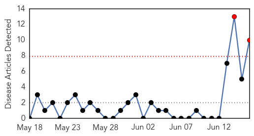
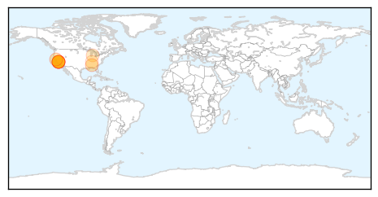

30 Day Trends
Web: 2 alerts, 0 warnings
Twitter: 0 alerts, 0 warnings
Top Articles:
- 0.989
- Whooping cough epidemic declared, could become concern in Utah
- 0.961
- Whooping cough reaches epidemic levels in California
- 0.960
- Whooping cough reaches epidemic levels in California
- 0.960
- Whooping cough reaches epidemic levels in California
- 0.957
- Whooping Cough Proves to be Cause for Grave Concern in California
- 0.939
- California Public Health Dept Responds To Whooping Cough Outbreak
- 0.929
- California Whooping Cough Outbreak Declared An Epidemic; Vaccination And Booster Shots Recommended
- 0.901
- Whooping Cough Declared an Epidemic in California
- 0.711
- Whooping cough vaccines urged in Kent County as California faces epidemic
- 0.595
- Whooping cough on the rise
Top Tweets:
-
No tweets found for Jun 16, 2014
Web/News Articles
Tweets

Article Locations
Article Confidences